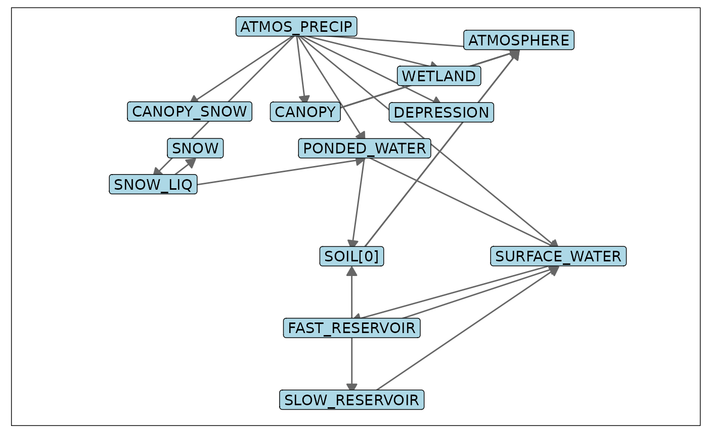
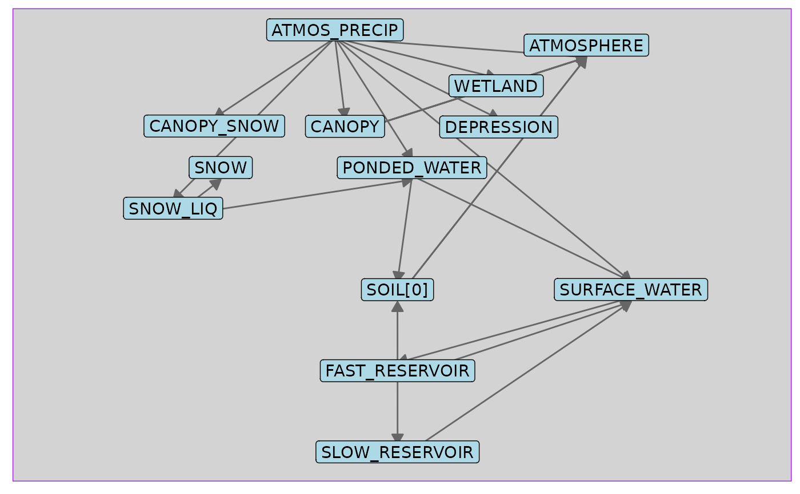
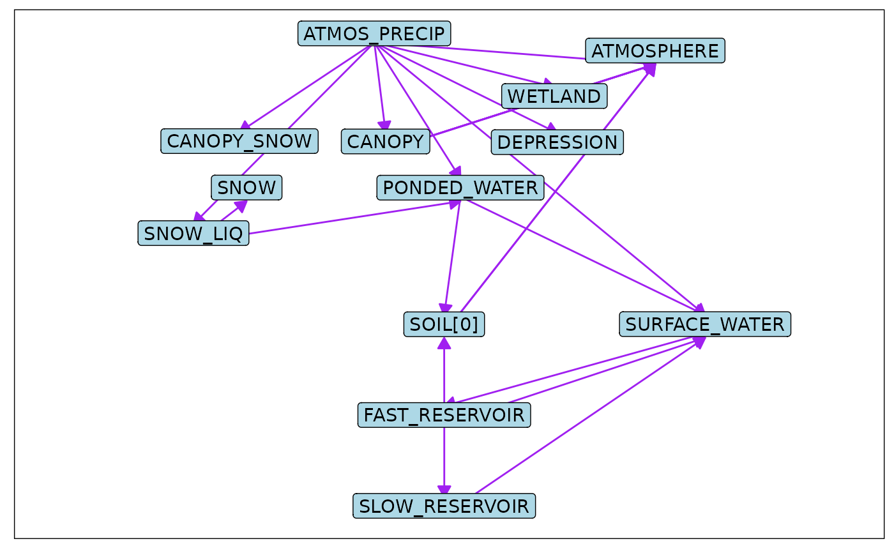
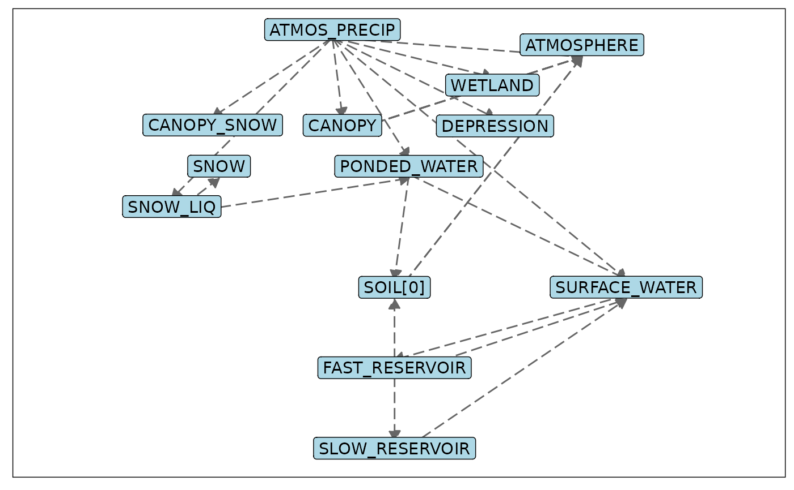

This routine takes a connections data from generated using rvn_rvi_connections
and returns the connections information as a network graph ggplot object.
rvn_rvi_process_ggplot(
rvi_conn,
sv_omit = c("SNOW_DEPTH", "COLD_CONTENT", "PONDED_WATER/SNOW_LIQ", "NEW_SNOW",
"SNOW_DEFICIT"),
repel_force = 0.001,
repel_iter = 2000,
lbl_size = 0.5,
lbl_fill = "lightblue",
arrow_size = 0.25,
arrow_adj = 0.25,
pdfout = NULL
)a list of connections and AliasTable, provided by rvn_rvi_connections
character vector of state variables to omit from the plot
numeric value indicating the 'force' with which the repel function will move labels
the maximum number of iterations for the repel algorithm
estimated height of labels, used in repel algorithm
fill colour for labels (default 'lightblue')
size of plotted arrows (default 0.25)
adjustment in line length reduction for arrows (default 0.25)
name of pdf file to save the network plot to, if null no PDF is generated
p1returns ggplot object. Also generates a .pdf file in working directory if pdfplot argument is not NULL.
Uses the output from the rvn_rvi_connections function to generate the plot
with the ggplot2 library..
sv_omit is used to reduce the clutter in the process plot of state variables that
one may wish to omit from the plot.
The function uses the functionality from ggrepel to repel labels from one another.
The degree of separation in the labels can be controlled by the repel_force and
lbl_size parameters (increasing either will increase the separation between labels).
The repel_force may range from approximately 1 to 1e-6. The lbl_size is a
relative estimate of the label height (default 0.5), which is used in estimating the label
height in the repel functionality. Providing a larger number will increase the perceived size
of the label in the repel functionality and tend towards more separation between labels, and
vice-versa. Both of these parameters may need to change depending on the plot size and number
of labels.
arrow_adj is the amount that each line segment is reduced in length to accomodate the
arrow. Increasing this value will decrease the length of the line segment, and place the arrow
further from the box. This value should generally be similar to the arrow_size parameter.
The basic model structure outline is followed, but unrecognized state variables are plotted
on the left hand side of the plot (determined with internal RavenR function rvn_rvi_process_layout).
rvn_rvi_connections to generate connections table from an rvi object
rvn_rvi_process_diagrammer to generate the structure plot using DiagrammeR.
See also the Raven page
library(ggplot2)
p1 <- rvn_rvi_read(system.file("extdata","Nith.rvi", package="RavenR")) %>%
rvn_rvi_connections() %>%
rvn_rvi_process_ggplot()
p1 ## plot to screen

## change the colour of the background
p1 + theme(panel.background = element_rect(fill = 'lightgrey', colour = 'purple'))

## adjust line/arrow colours (no conditional lines shown in Nith example)
p1 + scale_colour_manual(values=c('FALSE'='purple', 'TRUE'='red'))
#> Scale for colour is already present.
#> Adding another scale for colour, which will replace the existing scale.

## adjust line/arrow types (no conditional lines shown in Nith example)
p1 + scale_linetype_manual(values=c('FALSE'='longdash', 'TRUE'='twodash'))
#> Scale for linetype is already present.
#> Adding another scale for linetype, which will replace the existing scale.
